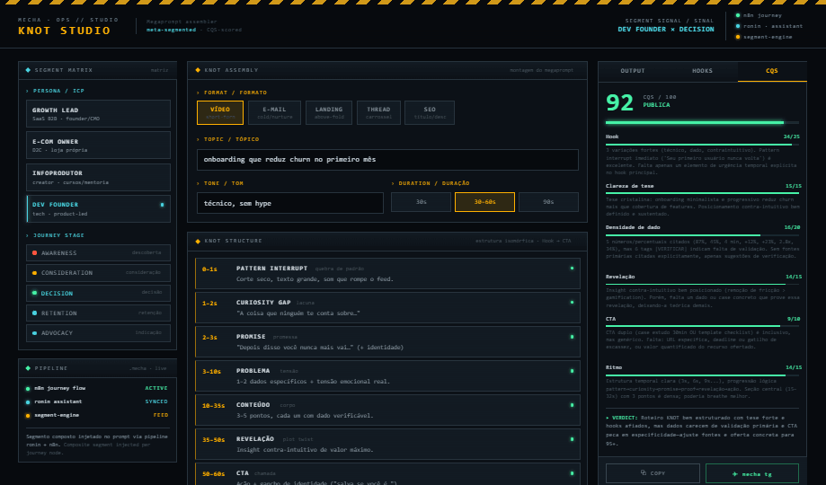
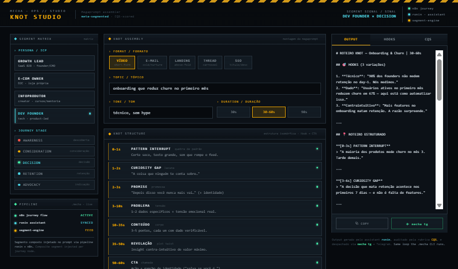
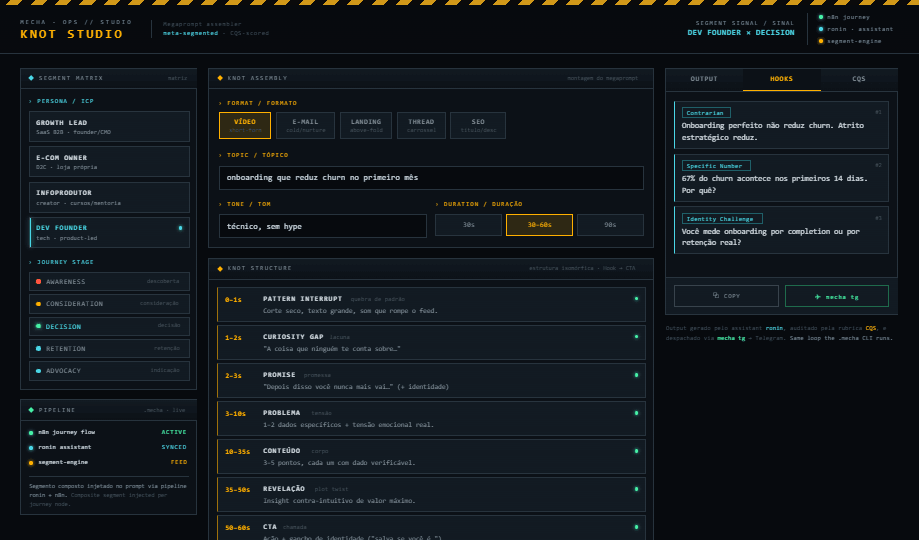
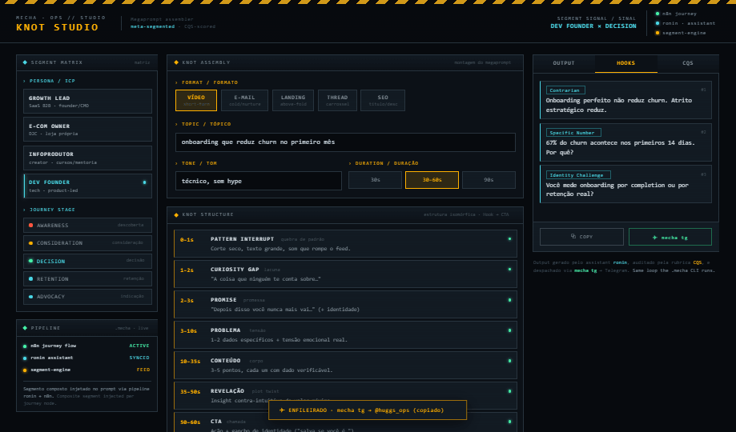

KNOT STUDIO
O KNOT Studio transforma o pack de megaprompts KNOT num cockpit: você seleciona um segmento composto (persona × estágio da jornada), monta o megaprompt, gera com IA (ronin), audita pelo CQS e despacha por mecha tg. Este documento percorre o fluxo completo — da seleção ao conteúdo finalizado — com o teste E2E executado ao vivo.

FLUXO PASSO A PASSO
step-by-step flowNa coluna esquerda, escolha a PERSONA/ICP e o JOURNEY STAGE. O par vira o sinal de segmento (ex.: DEV FOUNDER × DECISION) exibido no HUD e injetado no prompt via pipeline ronin + n8n.
Escolha o FORMATO (Vídeo · E-mail · Landing · Thread · SEO) e preencha TÓPICO, TOM e DURAÇÃO. O megaprompt montado se reescreve em tempo real abaixo da estrutura KNOT.
Confira a espinha KNOT (Pattern Interrupt → CTA) e o megaprompt. Aperte ⏵ ASSEMBLE & GENERATE — o assistant ronin devolve o conteúdo no painel OUTPUT.

Defina VARIATIONS (3 · 5 · 10) e aperte ⚡ HOOKS ×N. Cada hook vem rotulado pelo tipo (Contrarian, Specific Number, Identity Challenge, Reveal, Question), ≤ 12 palavras, calibrado para o segmento.

O CQS roda automático após gerar — ou aperte ▸ SCORE CURRENT OUTPUT. A rubrica (Hook 25 · Clareza 15 · Densidade 20 · Revelação 15 · CTA 10 · Ritmo 15) entrega nota 0–100, barras por dimensão e o veredito. ≥ 70 = publica.

Com nota ≥ 70, despache: ⧉ COPY copia o output (ou as hooks), ✈ mecha tg enfileira para o bridge Telegram e copia o payload. Mesmo loop do CLI .mecha.

RESULTADO DO TESTE E2E
live run · ronin engineCenário: DEV FOUNDER × DECISION · formato VÍDEO (30–60s) · tópico “onboarding que reduz churn no primeiro mês” · tom “técnico, sem hype”.
- mecha tg no browser enfileira + copia o payload (não envia direto ao Telegram) — o envio real precisa do bridge mecha tg rodando no .mecha.
- Geração usa ronin / IA com teto de 1024 tokens por chamada; conteúdos longos saem condensados por design (KNOT é enxuto).
- Sem chamada de IA disponível, o cockpit cai em MODO DEMO (saída + CQS mock) para o fluxo nunca travar.